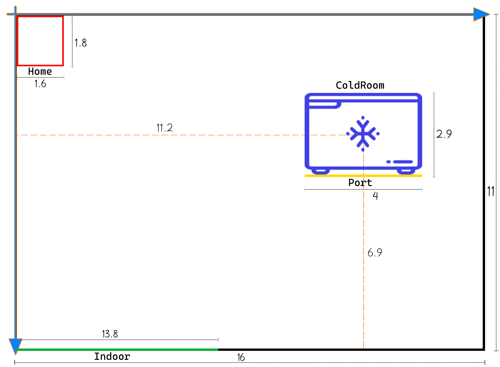

Introduction
Sprint0 del progetto d'esame - Barbieri, Ruberto
Requirements
- Identificare i componenti principali del servizio ColdStorageService
- Formulare un modello di interazione dei componenti individuati
- Modellare una architettura logica del sistema che faccia da punto di riferimento per gli sviluppi successivi
Requirement analysis
Domain analysis
Nella seguente tabella vengono riportate le entità trovate nel documento dei requisiti, con annessa una piccola descrizione basata su quanto deducibile dal suddetto documento.
Successivamente, verranno formalizzati i principali concetti in modo da averne una definizione precisa e inequivocabile.
| Termine | Descrizione |
|---|---|
| ColdStorageService | Rappresenta il servizio vero e proprio ed è composto da un insieme di elementi: |
| Service area | Rappresentazione di una stanza piatta a pianta rettangolare nella quale il transport trolley può navigare; contiene diversi punti di interesse:
e un ostacolo di posizione e dimensione predefinita. Viene modellata come un rettangolo. |
| INDOOR | Porta di accesso adibita all'inserimento del carico di cibo dal camion refrigerato. |
| ColdRoom | Contenitore refrigerato adibito al deposito di cibo ritirato da parte del transport trolley. |
| HOME | Posizione di partenza del transport trolley. |
| MAXW | Limite massimo di chilogrammi che la ColdRoom può contenere in un dato momento |
| Transport trolley | Entità di forma quadrata e lato RD, è inizialmente posizionato in HOME e può muoversi avanti e indietro, ruotare di 90° e fermarsi; sfrutta il DDR robot per muoversi nella Service area. |
| RD | Lunghezza del lato del transport trolley. |
| DDR robot | Differential Drive Robot fornito dal committente insieme al software BasicRobot per controllarlo. Mette in atto i comandi inviati dal transport trolley. |
| Azione di deposito | Operazione di deposito che coinvolge il camion refrigerato e il transport trolley:
|
| Camion refrigerato | Entità esterna al sistema che deposita FW kg di prodotti alimentari alla porta INDOOR. |
| FW | Quantità di carico che un camion refrigerato deve richiede di depositare espressa in chilogrammi. | FoodLoad | Carico di cibo (frutta, vegetali, ...) che necessita di essere refrigerato. |
| ServiceAccessGUI | Interfaccia grafica che permette a un utente di:
|
| ServiceStatusGUI | Interfaccia grafica che permette a un service manager di visualizzare:
|
| Service manager | Utente umano che puà interagire con la ServiceStatusGUI per monitorare lo stato della service area. |
| Sonar | Dispositivo collegato a un RaspberryPi in grado di misurare la distanza di oggetti in fronte a esso. |
| Alarm device | Componente astratto che, sfruttando un sonar, comunica al transport trolley di fermarsi quando quando la distanza rilevata è inferiore a DLIMT. |
| Led |
Dispositivo collegato a un RaspberryPi usato come dispositivo di avviso:
|
| Warning device | Componente astratto in grado di mostrare tre stati distinti:
|
| DLIMT | Distanza massima dal sonar per la quale si attivano i relativi alarm requirements: se viene rilevata una distanza minore l'alarm system comunica al transport trolley di fermarsi. |
| MINT | Tempo minimo che deve trascorrere prima che il transport trolley possa nuovamente gestire un messaggio di stop inviato dall'alarm system, espresso in millisecondi. |
| Ticket | Numero univoco che rappresenta una prenotazione di deposito |
| TICKETTIME | Quantità di secondi che esprime la durata della validità di un ticket. |
| Charge taken | Messaggio che rappresenta la presa in carico di un FoodLoad da parte del transport trolley. Questo messaggio è relativo ad una singola richiesta di deposito da parte di un camion refrigerato. |
| Stato service area | Informazioni riguardo la service area in un dato momento:
|
Sonar e Led
Per l'utilizzo dei dati del sonar e il controllo del led verrà usato software fornito dal committente unito a quello già disponibile alla nostra software house per abilitare la comunicazione con il transport trolley.
Formalizzazione dei concetti
Service area
In base alla descrizione fornita dal cliente, abbiamo modellato la service area come un rettangolo privo di ostacoli e circondato da 4 pareti, all'interno del quale sono presenti le 4 aree rilevanti descritte in precedenza:
- HOME
- ColdRoom
- INDOOR
- PORT
In un colloquio con il committente è stata precisita l'assenza di ostacoli, a differenza dell'immagine presente nel documento dei requisiti.
Il committente ha fornito un ambiente virtuale, detto WEnv, che rappresenta la service area e all'interno il robot che ci lavora. Abbiamo utilizzato questa rappresentazione come punto di partenza per definire con precisione la service area.
Per una definizione precisa diamo una misura in metri, basati sui dati ottenuti dall'ambiente WEnv.
Il modello definito è mostrato nell'immagine seguente:

KEY-POINT: la service area è stata modellata in metri per darne una definizione formale. Nei prossimi Sprint verrà analizzata nuovamente introducendo il nuovo concetto di misura unitàRobot.
Transport trolley e DDR Robot
KEY-POINT: il transport trolley corrisponde ad un attuatore di comandi verso il basicRobot.
In questa analisi abbiamo inoltre identificato lo stato corrente del transport trolley come le seguenti informazioni riguardo al transport trolley in un dato momento:
- posizione nella service area;
- stato di movimento (stopped,moving).
Ticket
Dal documento dei requisiti viene evidenziato come il ticket sia identificato da un numero; un analisi più approfondita verrà fatta nei successivi Sprint.
KEY-POINT: TICKETTIME non è una proprietà dell'entità ticket, bensì del servizio ColdStorageService.
Verbs analysis
La seguente tabella mette in luce le azioni che vengono compiute all'interno della logica applicativa, evidenziando qual è l'entità che le compie e l'oggetto che fa parte dell'azione stessa.
| Soggetto | Termine | Oggetto | Descrizione |
|---|---|---|---|
| Camion refrigerato | Sends a request | Peso FW | Il (guidatore del) camion invia una richiesta di deposito di FW kg di cibo tramite la ServiceAccessGUI. |
| Drives to the INDOOR | - | Il (guidatore del) camion, in caso di richiesta accettata, va fino alla porta di INDOOR, prima della scadenza del ticket (TICKETTIME). | |
| Enters the ticket number | Ticket number | Il (guidatore del) camion, inserisce il numero del ticket tramite la ServiceAccessGUI. | |
| Waits | Messaggio charge taken | Il (guidatore del) camion attende fino a che il messaggio Charge taken non appare sulla ServiceAccessGUI. | |
| Leaves the INDOOR | - | Il (guidatore del) camion, in caso di richiesta di deposito rifiutata, o dopo aver atteso il messaggio, lascia la INDOOR. | |
| ColdStorageService | Accepts a ticket | Ticket | Il servizio accetta il ticket che il (guidatore del) camion ha inserito. |
| Avvisa il transport trolley | Peso FW | Il servizio comunica al transport trolley che c'è del cibo da depositare. | |
| Sends message Charge taken | Charge taken | Il ColdStorageService comunica alla ServiceAccessGUI che il transport trolley ha raccolto il carico. | |
| Transport trolley | Accepts a ticket | Ticket | Il transport trolley accetta un nuovo ticket. |
| Reaches the INDOOR | - | Il transport trolley raggiunge la INDOOR. | |
| Picks up the food | Peso FW | Il transport trolley prende il cibo da depositare dalla INDOOR. | |
| Goes to the ColdRoom | - | Il transport trolley si muove fino alla ColdRoom. | |
| Stores the food | Peso FW | Il transport trolley deposita il cibo nella ColdRoom, il completamento di questa azione determina la fine dell'azione di deposito | |
| Return to HOME | - | Il transport trolley ritorna alla HOME dopo aver depositato il cibo. | |
| Sends message Charge taken | Charge taken | Il transport trolley comunica al ColdStorageService di aver raccolto il carico. |
Software fornito dal cliente
Il cliente fornisce il software basicrobot utile a controllare il DDR robot, oltre a software per gestire l'accensione e spegnimento di un led e la raccolta dei dati da un sonar.
Modello logico
In questa fase verranno presi in analisi i macro-componenti del sistema e le interazioni che avvengono fra essi, con il fine di delineare l'architettura logica del sistema.
Abbiamo deciso di utilizzare il modello ad attori per questo progetto in quanto rispecchia i requisiti analizzati dal documento fornito dal cliente: il sistema è costituito da componenti eterogenei che interagiscono tra di loro su base distribuita; inoltre abbiamo a disposizione librerie e un linguaggio di metamodellazione che supporteranno lo sviluppo orientato agli attori.
Il linguaggio in questione è QAK, un linguaggio di modellazione eseguibile che permette di creare prototipi e sistemi funzionanti in breve tempo (rispetto a linguaggi tradizionali) semplificando gli aspetti più complessi della gestione delle interazioni tramite una struttura basata su attori che operano in contesti.
Oltre alla velocità di sviluppo possibile con QAK, la scelta deriva dal fatto che il cliente ha fornito software per pilotare un DDR robot (o robot virtuali) compatibile con QAK.
Messaggio Charge taken
Nell'analisi dei requisiti abbiamo identificato una discrepanza riguardo al messaggio charge taken: non è chiaro se il messaggio debba avere semantica richiesta-risposta o semantica dispatch (non attende risposta).
Il committente, in un secondo colloquio, non ha dato nessuna preferenza riguardo alla tipologia di messaggio.
KEY-POINT: il messaggio charge taken verrà modellato con semantica request-reply.
Abbiamo scelto di modellare il messaggio charge taken con semantica request-reply, in quanto sarà l'operatore del camion a richiedere lo stato del carico attraverso la ServiceAccessGUI.
In questo modo non può succedere che vi sia un attesa del messaggio indefinitivamente lunga (con semantica dispatch non sapremmo mai se e quando il messaggio arriverebbe). Avremmo potuto usare un timeout per la gestione della semantica dispatch, ma abbiamo preferito una soluzione più deterministica, con il controllo in mano all'utente.

Problem analysis
Dalla fase di analisi dei requisiti sono emerse diverse problematiche da affrontare, ma sono stati anche individuati con chiarezza dei componenti che andranno realizzati.
Di seguito, è riportata la lista dei macro-componenti individuati, le cui descrizioni sono già state definite in fase di analisi dei requisiti:
- ColdStorageService
- TransportTrolley
- ServiceAccessGUI
- ServiceStatusGUI
- RaspberryPi
- Warning device (led)
- Alarm device (sonar)
Suddivisione in Sprint
Abbiamo pensato di utilizzare la tecnica divide et impera, separando quindi l'analisi dell'applicazione in parti più piccole ed analizzandole una ad una.
Per fare ciò si è dovuto prima identificare quale fosse il core business dell'applicazione, basandosi sull'analisi dei requisiti appena redatta. Abbiamo scelto come tale l'interazione tra ColdStorageService e TransportTrolley, in quanto da essa si realizza il cuore della logica applicativa richiesta dal committente. Il focus sul TransportTrolley implica anche la presa in considerazione del concetto di basicrobot, già definito in analisi dei requisiti e fornito dal committente.
La tecnica appena descritta ci ha permesso di dividere i requisiti da analizzare secondo un ordine di priorità, concretizzato nella definizione di quattro Sprint, ognuno volto all'analisi di una diversa problematica:
- Sprint1: ColdStorageService e TransportTrolley (analisi del core business)
- Sprint2: ServiceAccessGUI
- Sprint3: requisiti di allarme
- Sprint4: ServiceStatusGUI
Valutazioni in termini di tempo
Il fatto di aver acquisito un'ampia visione di contesto sull'applicazione (derivante dall'analisi dei requisiti) e di aver suddiviso il lavoro in macro-parti (corrispondenti agli Sprint), ci ha permesso di definire con un buon margine di errore il costo in termini di tempo per la realizzazione dell'applicazione.
Il tempo che verrà impegato è poi strettamente dipendente da come verrà suddiviso il lavoro tra i membri del team di sviluppo (2 in questo caso), con possibilità di parallelismo nell'analisi di problematiche diverse.
Abbiamo scelto di affrontare lo Sprint1 assieme, in modo tale da essere certi di analizzare quello che è il core business dell'applicazione nella maniera più precisa possibile (pagando però in termini di tempo).
Per i successivi Sprint, ovviamente al netto di eventuali nuove problematiche che sorgeranno, abbiamo invece deciso di dividerci l'analisi di Sprint2 e Sprint3, che affrontano problematiche differenti. Per quanto riguarda lo Sprint4, pensiamo possa essere svolto il parallelo allo Sprint2, in quanto trattano problemi molto simili. Tuttavia, decisioni defintive verranno prese e/o confermate nei successivi Sprint.
In sintesi, per come abbiamo pensato la suddivisione del lavoro, questi sono i costi valutati in termini di tempo:
- Sprint1: 2 persone - 20 ore
- Sprint2: 1 persona - 11 ore
- Sprint3: 1 persona - 16 ore
- Sprint4: 1 persona - 5 ore
Architettura logica
Sulla base dell'analisi dei requisiti non siamo ancora in grado di definire un'architettura logica completa del sistema, che verrà rimandata ai successi Sprint, a valle di un'analisi più approfondita dei componenti e delle interazione presenti fra essi.
Per ora, si utilizza come riferimento il Modello dei requisiti definito in fase di Analisi dei requisiti.
Test plans
Introduciamo un discorso sul Camion refrigerato e sul suo ruolo all'interno dell'applicazione (particolarmente in fase di test).
Come già detto in fase di analisi dei requisiti, quest'entità rappresenta l'utente umano che interagisce con il sistema (in particolar modo con la ServiceAccessGUI). Nonostante anche questo aspetto verrà trattato negli Sprint successivi, abbiamo considerato utile, all'interno del progetto qak di questo Sprint, modellare la SAG come entità mock che simula l'interazione con il sistema. In pratica, la SAG si comporta come se ci fosse l'operatore del camion a interagirci.
Per quanto riguarda i piani di test per l'applicazione, verranno per la maggior parte rimandati agli Sprint successivi, relativamente ai particolare problemi che verranno affrontati.
Nel frattempo, abbiamo deciso di testare quello che per ora abbiamo potuto definire nel modello dei requisiti, ovvero l'interazione tra la ServiceAccessGUI e il ColdStorageService.
Abbiamo quindi sfruttato l'entità mock sopra descritta per definire un'unità di test Junit che ne simula il comportamento. Vi è quindi corrispondenza 1 ad 1 tra l'attore qak serviceaccessgui e l'unità di test.
KEY-POINT: verrà testata l'interazione SAG - CSS tramite un'unità JUnit che simula il comportamento del Camion che interagisce con il CSS (tramite la SAG).
Testing
Come anticipato nella sezione precedente, abbiamo implementato una unità di test JUnit che simula il comportamento dell'utente umano (operatore del Camion) che interagisce con il CSS tramite la ServiceAccessGui.
In particolare, abbiamo testato la gestione della richiesta di deposito da parte del CSS, sia in caso vi sia spazio disponibile nella ColdRoom, sia in caso non ci sia.
In caso di spazio disponibile (e quindi richiesta di deposito accettata), abbiamo testato tutto il protocollo di interazione finora definito tra CSS e SAG.